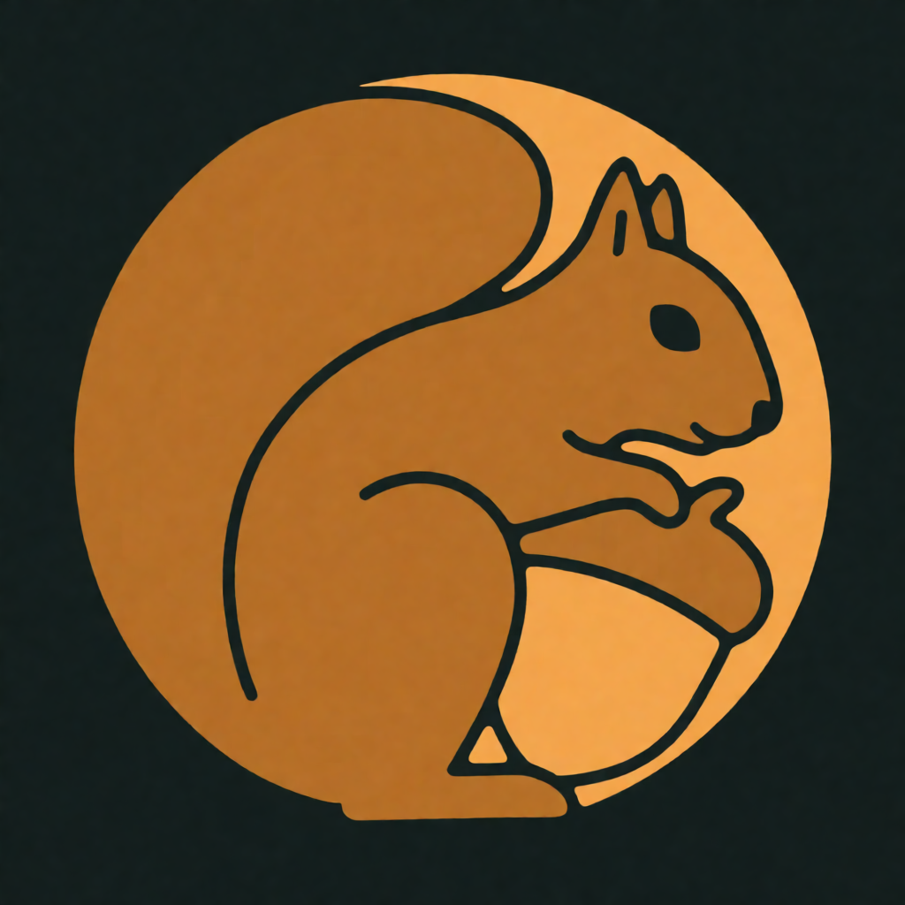
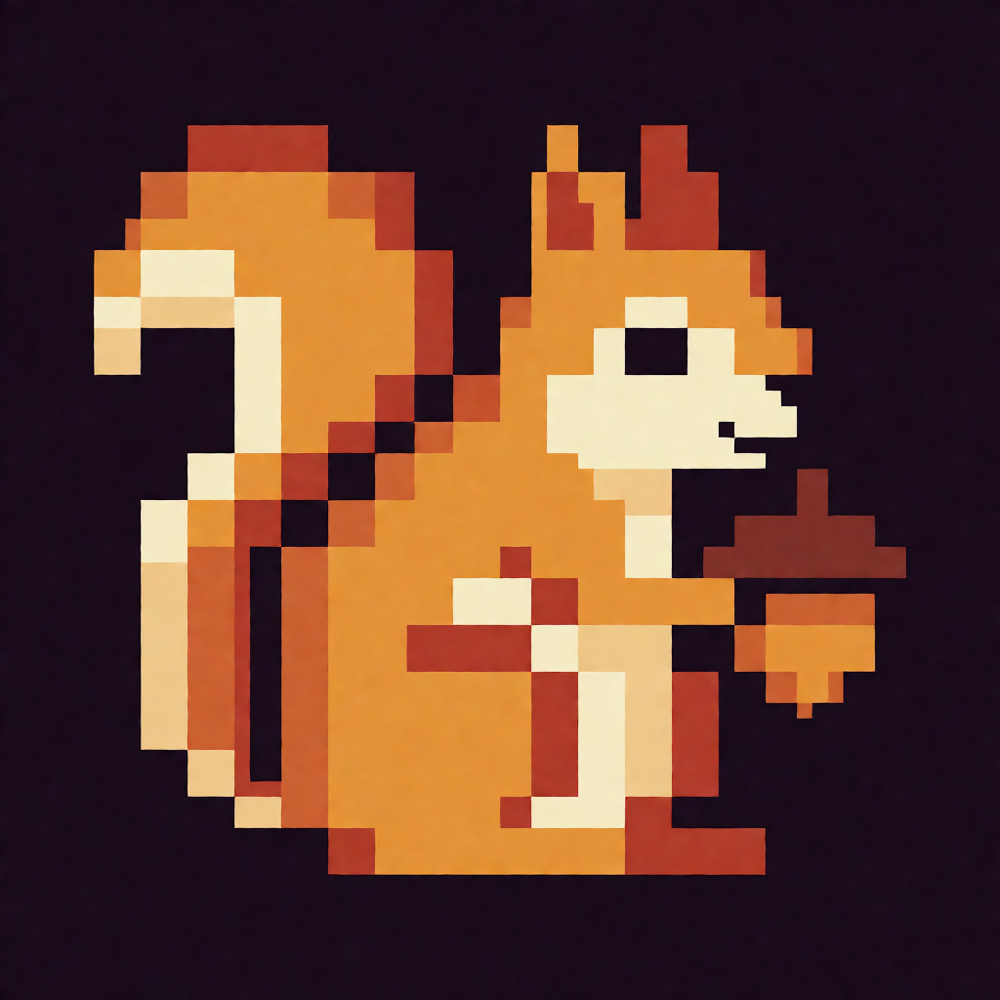
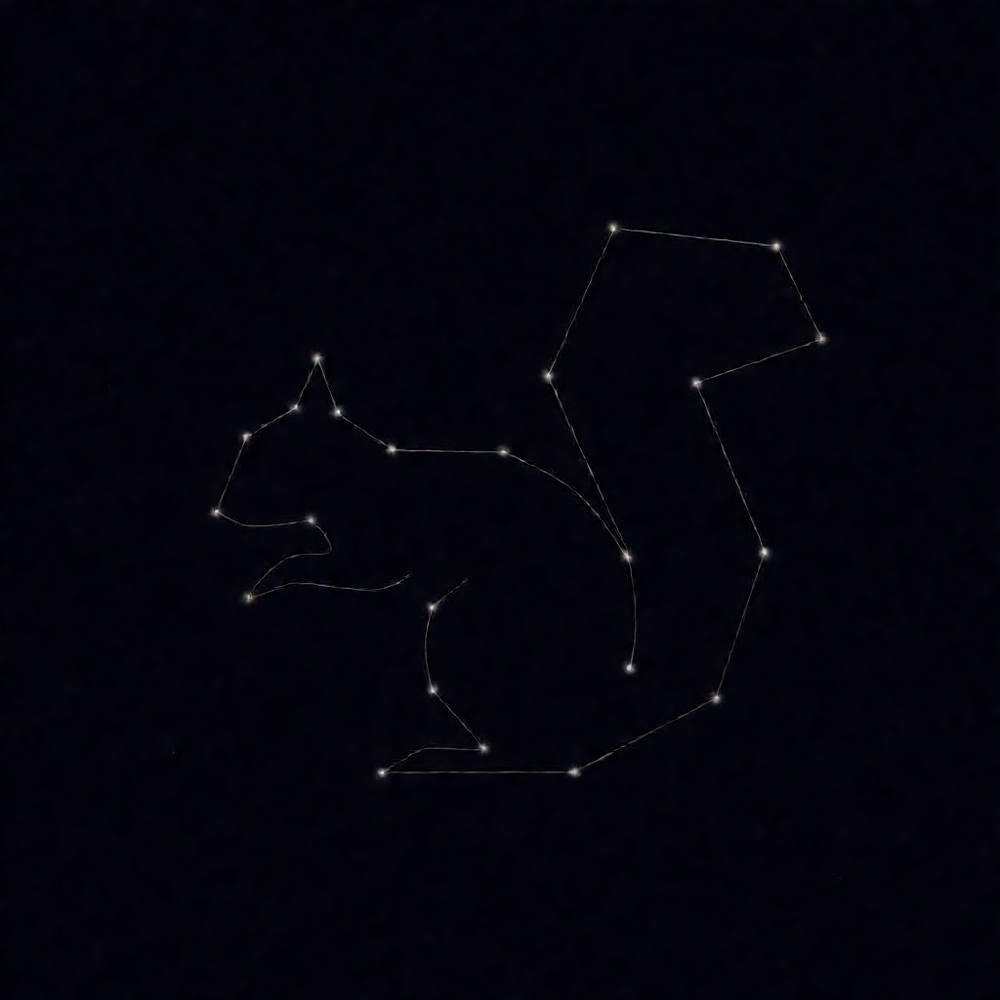
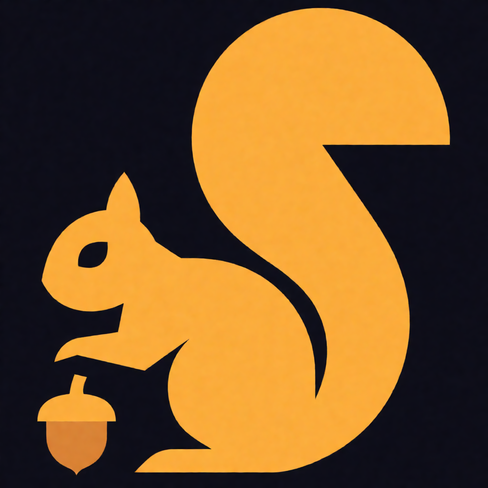
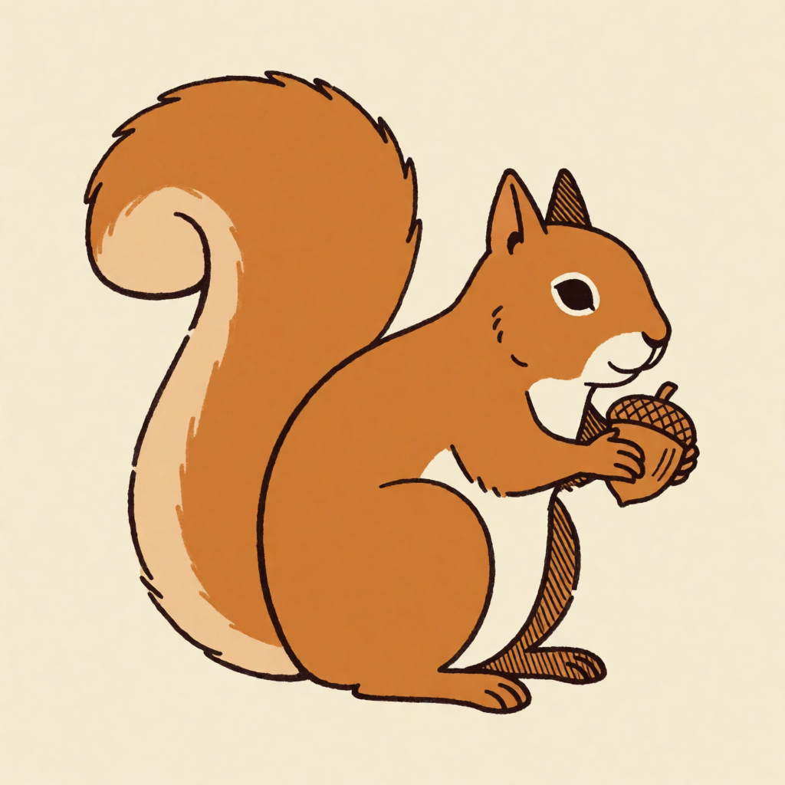
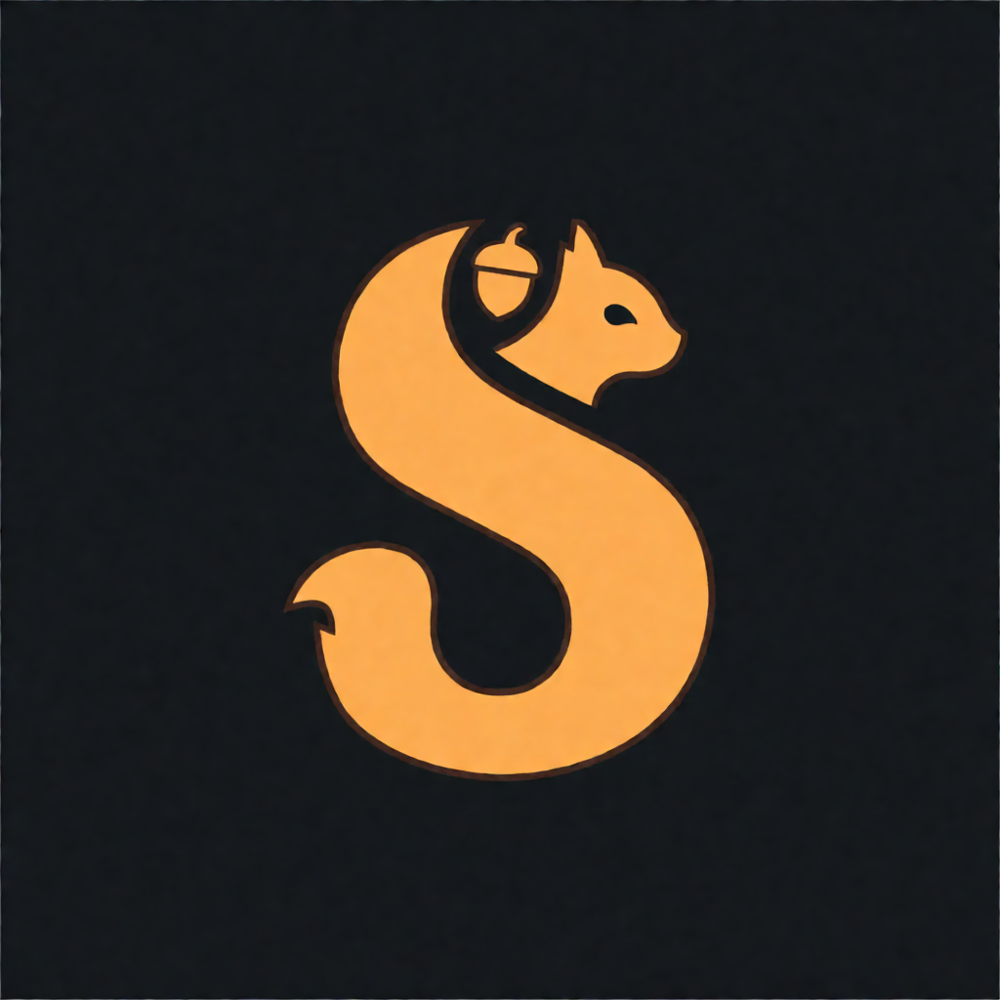

CONCEPT 01
The roundel
A squirrel curled around an acorn inside a circular badge, tail sweeping up round the rim. Flat matte forest-and-amber, crisp ink outlines — a screen-printed emblem.
badge · classic · reads at any size
SCIURIDAE · A MARK FOR THE TEAM
A few riffs at a mark for the team — different registers, same squirrel. These are generated concepts to react to, not finished logos: pick the one that feels right (or the bits of several) and Anthony can take it the rest of the way. The fox tail that was here before was a mistake. It is gone.



CONCEPT 01
A squirrel curled around an acorn inside a circular badge, tail sweeping up round the rim. Flat matte forest-and-amber, crisp ink outlines — a screen-printed emblem.
badge · classic · reads at any size

CONCEPT 02
A 16-bit game-jam squirrel holding an acorn, crisp square pixels in a warm limited palette. Leans into the jam origins of the team.
pixel · game-jam · playful

CONCEPT 03
A squirrel drawn as thin glowing lines between star points on a night abyss — the star-projector tie-in. Sparse, elegant, a little abstract.
line-art · night · star-projector

CONCEPT 04
A geometric squirrel in profile, the big arched tail doing the work, one amber colour with a dark accent. Sharp, modern, badge-like.
geometric · bold · indie-badge

CONCEPT 05
A hand-inked picture-book squirrel, plume tail and acorn, flat matte colour with visible hatching. The warmest, most Moonwood of the set.
hand-inked · cozy · picture-book

CONCEPT 06 · experimental
An S with a squirrel head and acorn — the weakest squirrel-read of the set (a bit squirrel-headed-snake). Kept for honesty; here be dragons.
monogram · experimental · weakest read